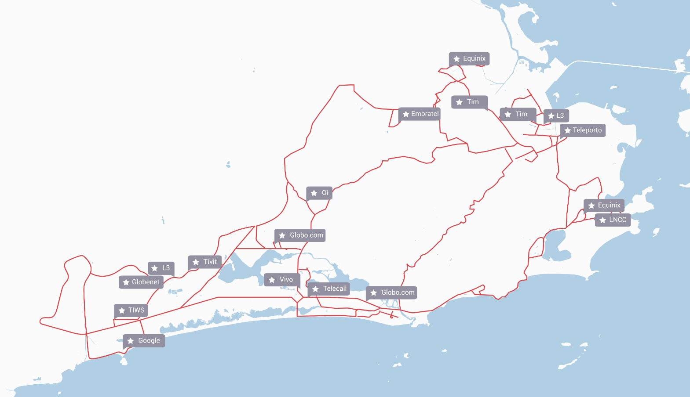

Sobre a empresa
Telecall é uma operadora regulada pela ANATEL (Licenças SCM, STFC e SMP), proprietária de uma rede de fibra de alta capacidade, oferecendo a seus clientes o mais alto padrão de qualidade, velocidade e acessibilidade em soluções telefônicas e de internet. Serviços que incluem uma ampla gama de valores agregados, oferecendo aos clientes operações mais produtivas, dinâmicas e eficazes.
Com a aquisição da licença SMP, a Telecall agora também opera serviços móveis (voz e dados), oferecendo aos clientes corporativos uma variedade de planos e comodidades de valor agregado. Além disso, Telecall opera como uma MVNE e MVNA, oferecendo seus sistemas e redes para outras empresas que estão interessadas em lançar suas próprias operações móveis para alavancar suas marcas.
Com experiência acumulada de mais de 20 anos e a busca constante por inovação e tecnologia, a Telecall é hoje referência no segmento de telecomunicações e sinônimo de qualidade e eficiência.
A Telecall foi fundada em 1998 e está sediada no Brasil, com escritórios em Miami, Portugal e Inglaterra.
Prêmios
Eleito Melhor Operador Regional do Ano na Premiação CC - Global Awards 2019 em Berlim
Destaque em Infraestrutura e Soluções de Conectividade e Comunicação Unificada na Premiação da Aberimest em 2018, entregue pelo ministro de telecomunicações Gilberto Kassab e Juarez Quadros, presidente da Anatel.
Destaque como Operadora em Inovações Móveis e pelas Soluções de Convergência Fixo-Móvel, Split Billing, Integração e Colaboração Empresarial da Aberimest em 2019.
Duas vezes vencedor do Prêmio de Voip Hospedado entregue pela Revista Internet Telephony em 2018 pelo produto Callphone de Comunicação Unificada e Colaboração.
#2517 no ranking Inc. 5000 das empresas privadas de maior crescimento acelerado nos EUA de 2020..
Linha do Tempo
+ 20 anos de experiência global em soluções de comunicação

Missão
Garanta os melhores serviços e custos otimizados para sua empresa, com toda mobilidade e segurança que só a Telecall oferece para você no mercado.
Visão
Ser reconhecida pela busca constante em soluções de comunicações diferenciadas com mobilidade e ajudando na produtividade das empresas.
Valores
Nosso valores representam a base do desenvolvimento do nosso negócio.
1. Equipe, somos um time de elos fortes.
2. Ética e respeito no ambiente pessoal e profissional.
3. Faça o que goste e tenha foco.
4. Comprometa-se e entregue o prometido.
5. Senso de urgência e de importância.
6. Temos como base nosso DNA e pilares, inspire-se neles.
7. Fazer mais e melhor com menos.
8. Busca de desenvolvimento pessoal e profissional.
9. Respeito pelo presente e pelo próximo observando sempre o crescimento sustentável.
10. Surpreenda o cliente, a si mesmo e, a nossa equipe.
Presença Mundial

Fibra Telecall
